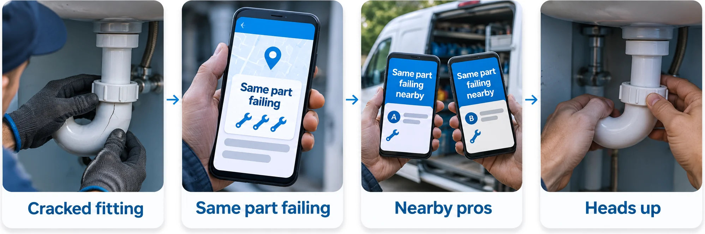
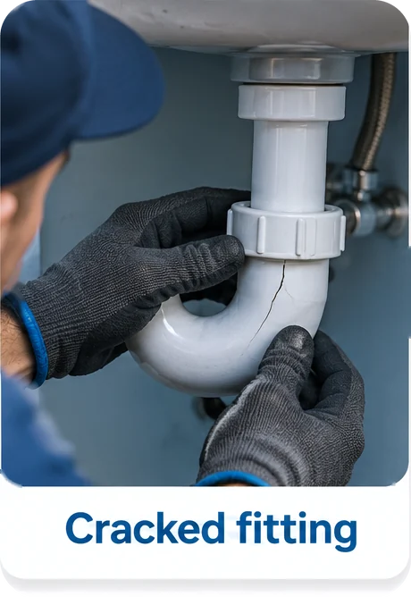
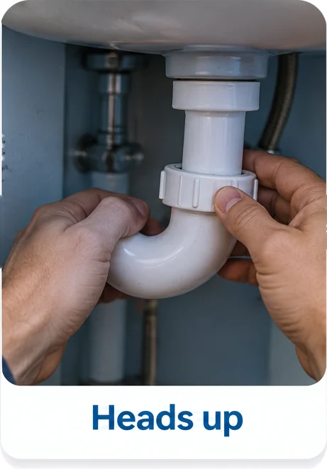

Pros Helping Pros
CommunityA bold bet

- 1

A pro finds a cracked fitting under a sink.
- 2

The app shows the same part failing near here.
- 3

Nearby pros get the same heads up on their phones.
- 4

The next pro checks the part before it fails.
Problem
I work alone, with no one to lend a tool, vouch for my skills or take my customers when I retire.
What you gain
When I need a tool or a second opinion, I ask a pro I already know.
Brings the next customer
Pros who help each other pass customers along, including when one retires.
Why build it
Solo providers feel alone, and a trusted local network gives them a reason to stay.
Who has it
Solo providers inside a trusted local network.
Also inside
- Hand over customers when retiring
- Borrow a rare tool
- Warn about failing parts